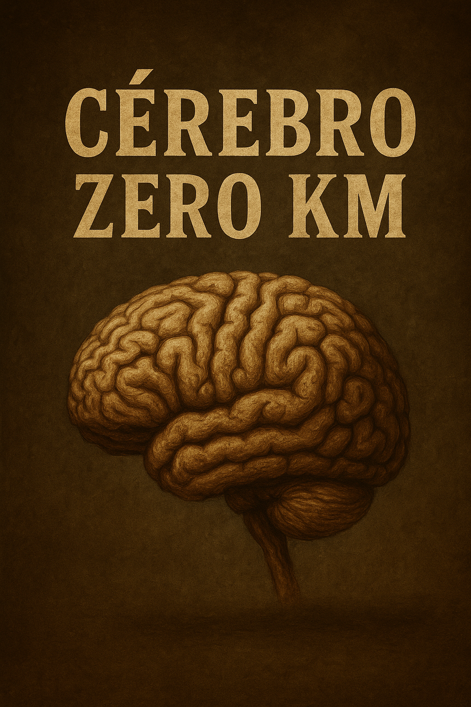

Publicado em 2025-05-20 13:11:21
A evolução foi injusta. Deu ao Homo sapiens um cérebro de 1.300 cm³, mas não incluiu manual de instruções. Resultado: milhões de unidades fabricadas, mas poucas efectivamente utilizadas. É como comprar um Ferrari para o ter parado na garagem, religiosamente coberto com uma manta da Feira de Carcavelos.
O português, por exemplo, é um caso de estudo. Herdou um cérebro completo de fábrica, com lóbulo frontal, memória e tudo. Mas decidiu, colectivamente, não o tirar da caixa. Vai-se usando ali uma zona para o fado, outra para o futebol, um pedacinho para a novela das nove, e já está.
Pensar? Para quê? Dá câimbras. Questionar? Isso desinstala o conforto mental. Revoltar-se? Ai, que perigo! Pode dar direito a perda de amigos no Facebook ou, pior, a sair do grupo do WhatsApp da família.
E assim, geração após geração, o cérebro nacional vai ficando como novo. Nunca usado. Sem riscos, sem ideias, sem quilometragem. Quando morrem, os neurocirurgiões abrem a caixa craniana e encontram um folheto de garantia intacto.
Na escola, aprende-se a decorar. No trabalho, a obedecer. Na vida, a calar. E ai de quem tenha uma ideia! Rapidamente é declarado subversivo, lunático ou — o insulto-mestre — "politizado". Pensar passou a ser mal visto, como fumar em frente às crianças.
É por isso que os países vão sendo roubados a céu aberto, os escândalos prescrevem com crónicas de comentadores, e a população segue em frente como se nada fosse, desde que o telejornal não falhe a previsão meteorológica.
E o mais irónico é que não se trata de ignorância, mas de abdicação voluntária. Um pacto de comodidade: eu não penso, tu mandas em mim, e juntos fingimos que vivemos em democracia. Um acordo silencioso, selado com scrolls infinitos e “likes” apáticos.
E assim caminha o Homo encolhidus, subespécie moderna, com cérebro zero km, mas opiniões recondicionadas, vendidas em pacote político ao domingo.
Talvez um dia acordem. Talvez. Mas não contes com isso já. Estão a actualizar o TikTok.
Nota: esta crónica foi escrita com o cérebro em uso. Pode conter traços de lucidez.
O grande paradoxo de todos os tempos, o Homo encolhidus. dotado de um cérebro moderno: sofisticado… mas sem uso.
Mas lembra-te: pensar ainda é grátis… por enquanto.
Autor: Francisco Gonçalves in Fragmentos de Caos